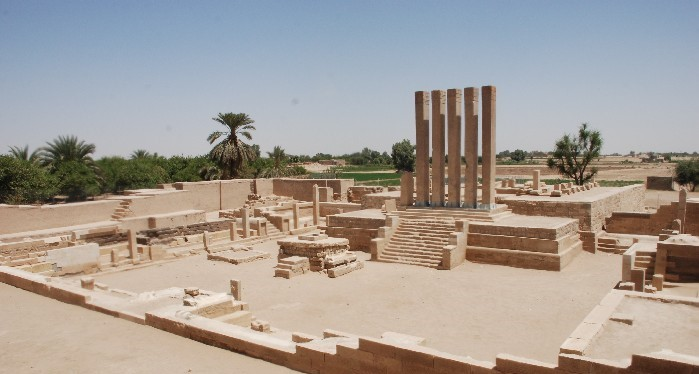
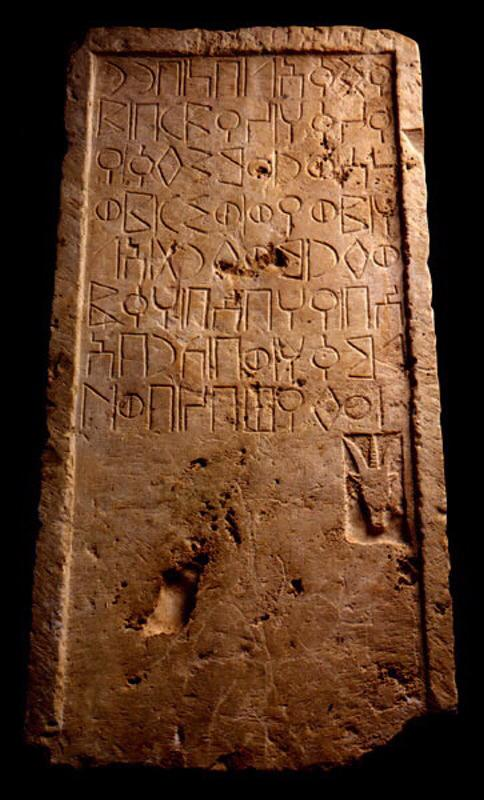

مملكة سبأ

هي مملكة عربية يمنية قديمة ( نحو 1000 ق.م- 275 م) ، وهناك اختلاف حول مرحلة نشأتها، فهي موجودة من القرن الحادي
عشر قبل الميلاد على الأقل . إلا أنها ظهرت بوضوح في القرن العاشر ـ التاسع قبل الميلاد كانت أقوى الاتحادات
القبلية في اليمن القديم
ولم يرتبط اسم إقليم اليمن بأي مملكة بقدرها. استطاعت المملكة تكوين نظام سياسي وصفه علماء العربية الجنوبية بأنه
فيدرالية ضمت مملكة حضرموت ومملكة قتبان ومملكة معين وكل القبائل التابعة لهذه الممالك، وأسسوا عددا من المستعمرات
قرب فلسطين والعراق.
سبأ اسم جد قبيلة من القبائل العربية القديمة، أما معنى الاسم فقد وردت نظريات كثيرة، وجدت اثار حجرية بـخط المسند
تشير إلى معنى قاتل أو حارب بلفظة سبأ.ضمت هذه القبيلة عشائر عديدة إما بالحلف أو القوة، وسبأ في عرف النسابة وأهل
الأخبار هو جد من
الأجداد القدامى التي تعود إليه أصول كثير من القبائل العربية، بل نصف القبائل العربية تعود بسلسلة نسبها إلى سبأ،
والأدلة الأثرية بشأن ذلك لم تكتشف بعد، وقال بذلك النبي محمد وسرد النسابة هذا الرأي أيضاً. تأثر بعض الإخباريين
بطريقة اليهود في
تعقب الأنساب وشبه تأليه الشخصيات القديمة، بل كانت التوراة مصدرهم الذي استقوا منه تلك الأسماء، بالإضافة لزيادات
من عندهم وتعريب لأسماء تبدو في ظاهرها عبرية
كان السبئيون منذ القرن الثامن قبل الميلاد يعبدون القمر والشمس وكوكب الزهرة، وفي القرن الرابع قبل الميلاد مع
تغير الأسرة الحاكمة أصبح السبئيون يعبدون الصنم تألب ريام أحد أجداد الهمدانيين تليه أصنام القبائل الخاصة، فلكل
قبيلة صنم خاص يعقب
الأصنام السبئية الرئيسية كانوا آباءً للقبائل وفق معتقداتهم القديمة بالإضافة لحيوان (الوعل) الذي يرمز أيضاً
لكوكب الزهرة ، وفي القرن الأول قبل الميلاد بدأ السبئيون بالتخلي عن الوثنية واتجهوا إلى عبادة إله واحد هو رحمن
، اشتهرت المملكة
بسدودها وأشهرها سد مأرب القديم وسيطرتهم على الطرق التجارية التي أهمها طريق البخور وطريق اللبان، ونقلوا نظام
كتابتهم القديم المعروف بخط المسند إلى المواقع التي سيطروا عليها في شمال الجزيرة العربية، وشمال إثيوبيا وكان
لهم نظام كتابة آخر عرف
باسم الزبور.
تأسيس مملكة سبأ.
كان السبئيون/اليمنيون القدماء ينسبون أنفسهم إلى سبأ قبل الإسلام، في القرنين الأول والثاني الهجري كان
السبئيون/اليمنيون يفضلون اتخاذ لقب "السبئي" ولم يكونوا ينسبون أنفسهم لقحطان، ظهرت شخصية قحطان في كتب الروائيين
العرب في القرن الثاني
الهجري، بالنقوش ظهر "قحط" أو "قحطن" كقرية في مملكة كندة ولم تكن قبيلة.
وتصف النقوش قبيلة مذحج وكندة بأعراب سبأ، وقد كان لهم مكانة مهمة عند السبئيين وملوكهم، وبينما كانوا يطلقون على
العرب تسمية "عربن " أي العرب.

كان ملوك سبأ الأوائل حسب نظرية الباحثين في النقوش الحجرية من قبيلة فيشان، وقد ذكر في الكتب اليهودية أن يقشان
شقيق مدين وأن "ولد يقشان سبا وددان". وتطلق الكتب اليهودية اسم الدادانيين على المعينيين نسبة لمستوطنة ددن في
العلا التي كانت محطة
استراحة القوافل القادمة من إقليم اليمن. ورُوى عن النبي محمد أن: «رجلًا سألَ رسولَ اللهِ صلى الله عليه وسلم عن
سبأٍ ما هو أَرَجلٌ أم امرأةٌ أم أرضٌ؟ فقال : بل هو رجلٌ وَلَدَ عَشْرةً فسَكَّنَ في اليمنِ منهم ستَّةٌ وبالشامِ
منهم أربعةٌ أما
اليمانيُّونَ فَمَذْحِجٌ وَكِنْدَةُ وَالْأَزْدُ وَالْأَشْعَرِيُّونَ وَأَنْمَارٌ وَحِمْيَرُ، عَرَبًا كُلَّهَا،
وَأَمَّا الشَّامِيَّةُ: فَلَخْمٌ وَجُذَامُ وَعَامِلَةُ وَغَسَّانُ».
هناك عدة نظريات بشأن أصول السبئيين القديمة، عند الإخباريين والنسابة العرب هم أبناء حمير وكهلان بني سبأ (سبأ
عبد شمس بن يشجب بن يعرب بن يقطان/قحطان بن هود)سبأ كان والد كهلان وحِميَّر وهم القسمان الذين يعود إليهم قسم من
العرب عرفوا في
الأدبيات بالعرب السبئية أو اليمانية أخبر المؤرخين أن عبد شمس أو سبأ قبيل وفاته بعد خمسمئة سنة من الحياة، أوصى
حمير بالملك ووزع كهلان خارج بلاد اليمن ليحموا المملكة وسردوا عددا من الأسماء لملوك مثل مزيقياء الملطوم
ومزيقياء اسمه عامر بن عمرو
أزدالأزدي وسمي بـمزيقياء لأنه كانت تنسج له في كل سنة ثلاث مائة وستون حلة، ثم يأذن للناس في الدخول فإذا أرادوا
الخروج استلبت عنه وتمزق قطعاً فسمي على ما زعموا ثم خرج مزيقياء هذا من مأرب قبيل انهيار سد مأرب وبقي الملك لبني
حِميَّر وعلى هذا
تنتهي قصة مملكة سبأ عند النسابة وأهل الأخبار.